大路饼藏
玉子的同学，也是对门年糕店 RICE CAKE Oh!ZEE 的儿子。他参加电影研究会，与玉子一起在商店街长大。
HELLO, TAMAKO
开朗、认真，又偶尔有一点迟钝。她让熟悉的小地方，变得格外可爱。
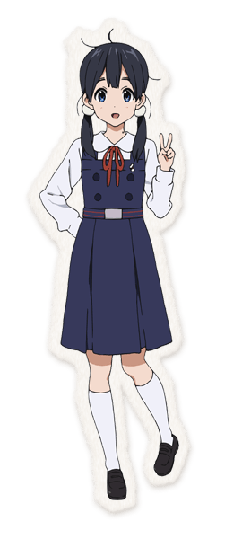
北白川玉子是兔子山商店街年糕店“玉屋”的女儿。她开朗、热心，爱吃年糕，也珍惜家人、朋友和街坊。虽有些冒失，揉圆年糕的手艺却十分出色。
上学、参加棒舞部、帮家里的店铺、为商店街策划活动，构成了她的日常。故事从一次与会说话的鸟相遇开始，逐渐讲到朋友、家人，以及成长中的心意。
TV 动画里，玉子从高一走进高二；到了电影中，她已经站在高三的春天。
THE PEOPLE AROUND HER
对门的青梅竹马、学校里的朋友、家人，还有那位意外来客。
玉子的同学，也是对门年糕店 RICE CAKE Oh!ZEE 的儿子。他参加电影研究会，与玉子一起在商店街长大。
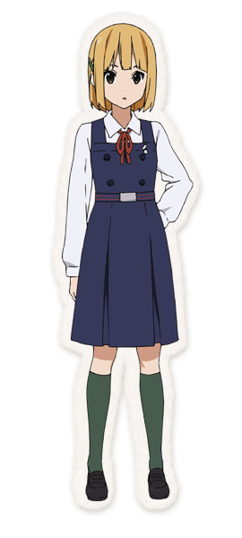
同学兼棒舞部伙伴，祖父母经营商店街的玩具店“常盘堂”。她常照顾玉子，也会带着关心吐槽她。
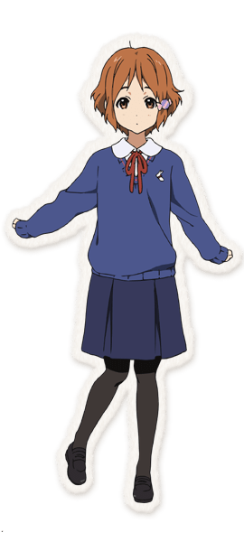
木工家的女儿，性格从容。她会留意建筑是否垂直，常拿着工具测量；学校与商店街都能见到她的身影。
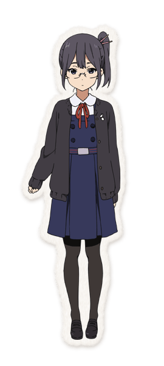
认真、安静的羽毛球部成员。进入高二后与玉子同班，一次拜访让她们逐渐熟悉起来。
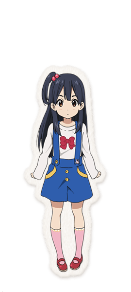
注重打扮的小学生，觉得家里的年糕店有一点土。她与姐姐一样在商店街长大，却有着不同的喜好与烦恼。
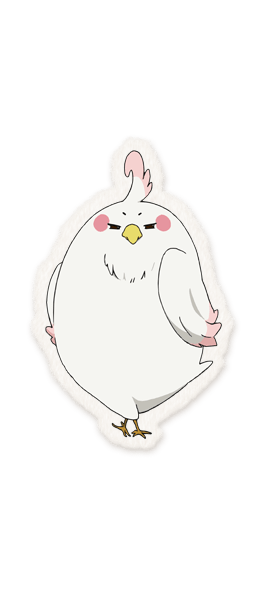
从南方国家来到商店街、会说人话的鸟。与玉子在花店相遇后借住在她家，给熟悉的街坊生活带来许多意外。
WELCOME TO USAGIYAMA
年糕、花香、唱片与一声声招呼，组成了她最熟悉的风景。

从玉屋走到唱片店，
每一扇门后，都有人认识玉子。
玉子的家，也是日常故事的重要起点。父亲豆大专心做年糕，祖父福与两个女儿一起生活在这里。
饼藏家的店，旧名“大路屋”。父亲吾平喜欢开发新年糕商品，常与坚持传统的豆大拌嘴。
由花濑薰经营，店内摆着各色花卉。德拉随着花束来到这里，玉子的故事也由这次相遇展开。
店主八百比邦夫会根据客人的心情选唱片。这里把音乐、咖啡与谈话连在一起，是商店街特别的休息角落。
这里有兼任町内会长的汤本长治，也有看板娘さゆり。澡堂的更衣室同时承担着街坊集会的功能。
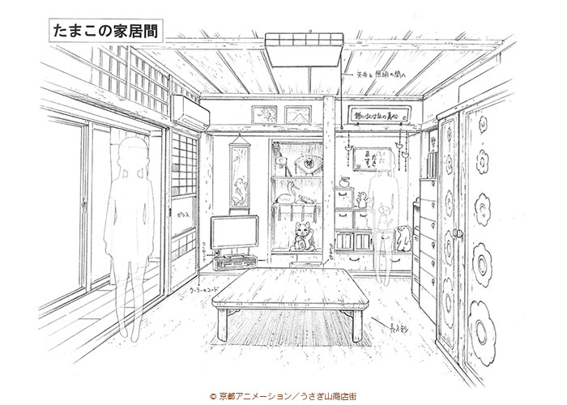
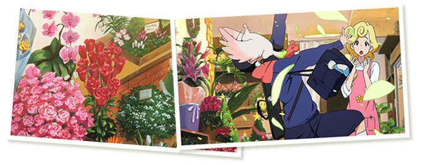
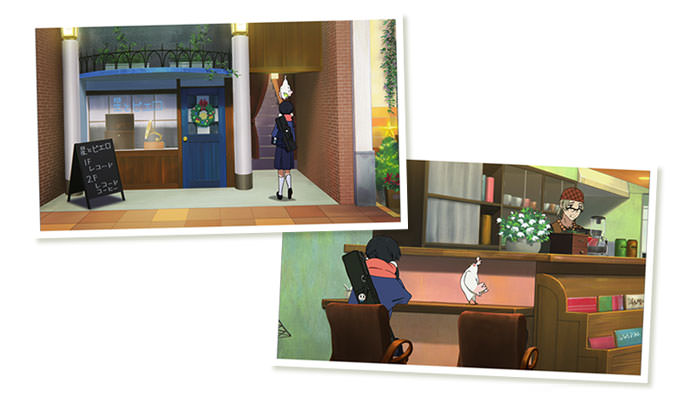
EVERYDAY / LOVE STORY
先认识她的日常，再听见她的心意。
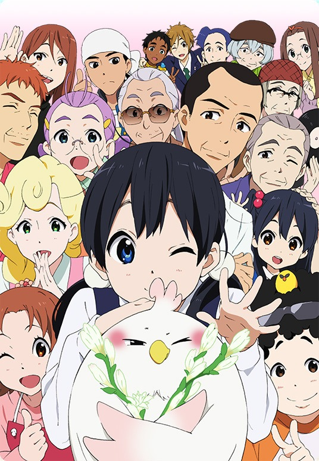
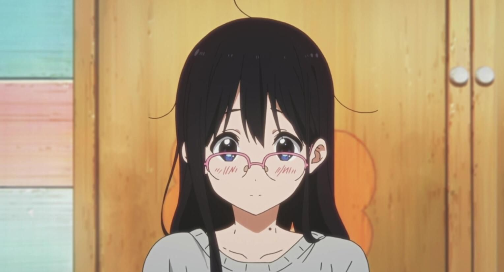
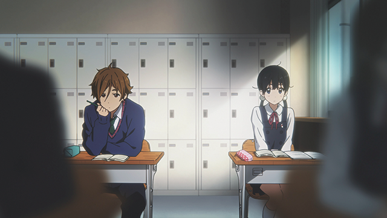
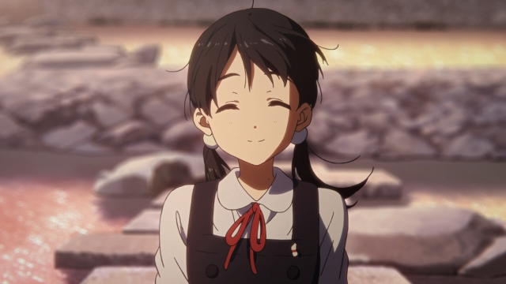
从商店街的热闹，到独处时的安静。换了心情，还是我们熟悉的玉子。
TWELVE LITTLE CHAPTERS
点开一集，看看那一天发生了什么。中文集名为参考译名。
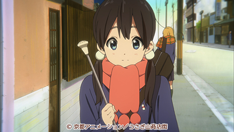
EP. 01那女孩是可爱的年糕店之女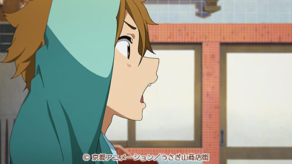
EP. 02情人节，恋之花开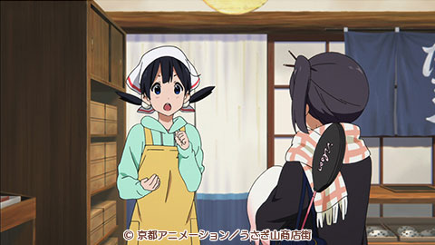
EP. 03冷淡的女孩，热乎乎的心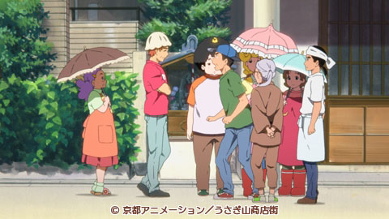
EP. 06我的后背也发凉了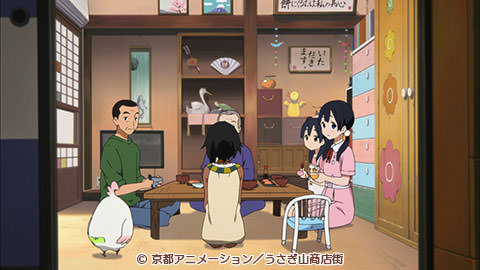
EP. 07那女孩要出嫁了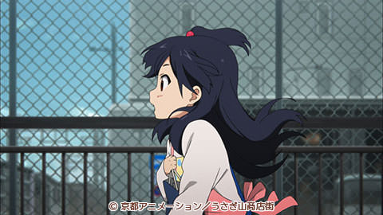
EP. 09唱出来吧，恋爱之歌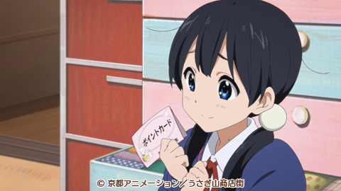
EP. 11没想到那女孩是公主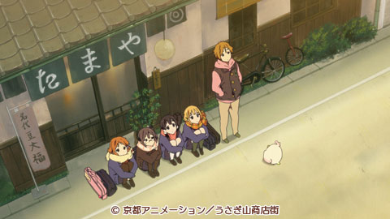
EP. 12今年也又过去了THE SOUND OF TAMAKO
把熟悉的开场、片尾和电影主题曲放在一起，故事仿佛又从第一天开始了。
点击曲目，查看官方唱片介绍。
STAFF 监督 · 山田尚子 / 系列构成・脚本 · 吉田玲子 / 角色设计 · 堀口悠纪子
音乐 · 片冈知子 / 动画制作 · 京都动画
FRAMES TO KEEP
笑容、放学路、朋友与春天。把故事中的画面，慢慢看清楚。
12 幅画面
画廊采用官方绘图与原作截图。点开可放大，并查看画面的出处。
いつもの街、いつもの笑顔。
明天，也来商店街吧。